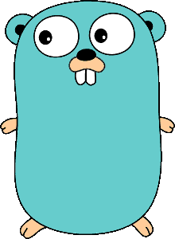

Adicionando loop ao meu interpretador BrainFuck
Continuando o projeto de fazer um interpretador brainfuck em GO

Preguiça
Uma coisa tão simples, mas que ficou meses parado, foi implementar loop para meu interpretador BrainFuck, descrito no meu texto Iniciando em GOLANG (GO) e BrainFuck. Hoje fiz a implementação mais rápida e tosca possível, que ainda não permite loops aninhados. Mas já podemos usar os operadores [ e ] para cercar o código a ser repetido.
O código para esse texto está na tag 0.0.3 no repositório GitHub.
Para os mais curiosos e pacientes, há a tag 0.0.2 com uma baita confusão e uma mudança que não sei como não tive que fazer antes: implementar um contador de instrução.
Voltando ao que interessa...
O que precisava ser feito é determinar o início e o fim do loop, e o que fazer em cada caso :).
Primeira coisa foi implementar um contador de instrução, para que saibamos qual instrução executar:
type Language struct {
source []rune
tokens map[rune]func(*Language)
memory [100]int
pos int
instruction int
}
Se encontrarmos o início do loop, verificaremos se devemos entrar. A posição corrente na memória deve ser diferente de 0 (zero). E seguimos para o próximo comando. Caso contrário, encontramos o final do loop e continuamos:
func open_bracket(l *Language) {
if l.memory[l.pos] == 0 {
l.instruction = search(']', l.source[:])
}
}
Se encontrarmos o final do loop, devemos decidir se sairemos. A posição corrente na memória deve ser igual a zero. Se não for, encontramos o começo do loop, caso contrário próximo comando e segue a vida.
func close_bracket(l *Language) {
if l.memory[l.pos] != 0 {
l.instruction = search('[', l.source[:])
}
}
Foi implementada uma função de busca, search, que recebe como parâmetros o elemento a buscar e onde buscar, retornando -1 caso haja erro. A linguagem GO tem um jeito melhor de lidar com erros, mas por enquanto vai assim mesmo:
func search(element rune, array []rune) int {
var index = -1
for i, v := range array {
if element == v {
index = i
break
}
}
return index
}
Note que para usar a função search passamos o array como [:], ou seja, um slice (fatia) do array (matriz).
Finalmente, incrementamos nossa "máquina virtual" com os dois comandos:
'[': func(l *Language) { open_bracket(l) },
']': func(l *Language) { close_bracket(l) },
Mas o coração de nossa máquina virtual também foi recauchutado:
func (l *Language) Execute() {
- for _, token := range l.source {
+ for {
+ var token = l.source[l.instruction]
+
if function, ok := l.tokens[token]; ok {
function(l)
} else {
log.Fatalf("Invalid token [%c]\n", token)
}
+
+ l.instruction++
+
+ if l.instruction >= len(l.source) {
+ break
+ }
}
}
Deixei as marcas do diff para ressaltar as mudanças, que no final, é a implementação de um contador para a instrução a ser executada.
Para testar as novidades, vamos contar e imprimir valores:
➤ echo '+++++.[-.]' | go run mfbil.go
5
4
3
2
1
0
Na posição zero, somamos 1 por cinco vezes e imprimimos, entramos num loop que subtrai e imprime, até que seja zero. É isso aê!